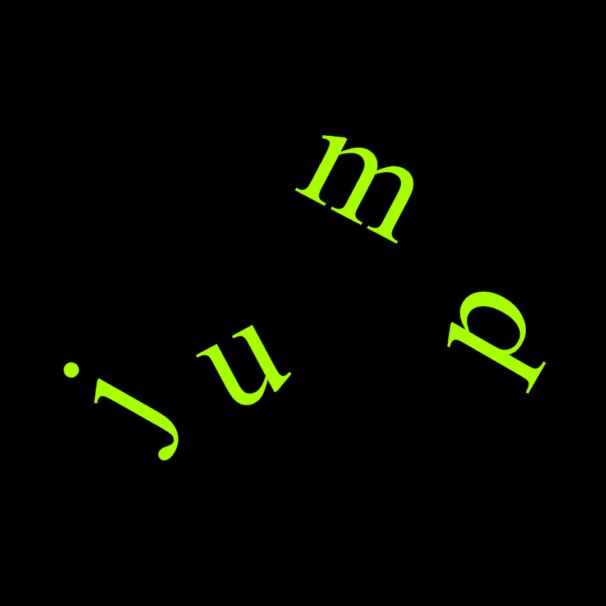
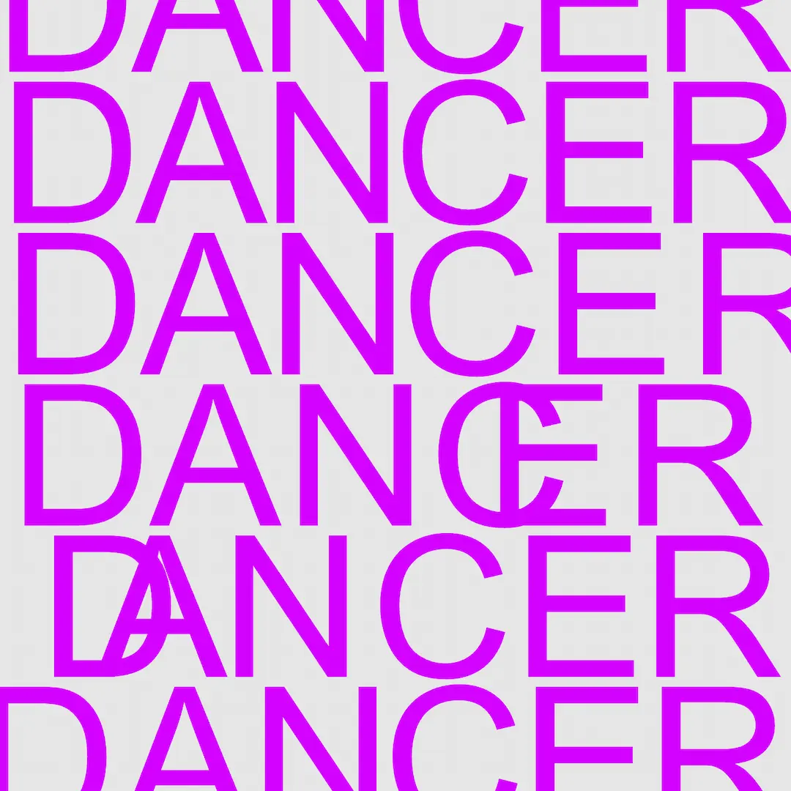
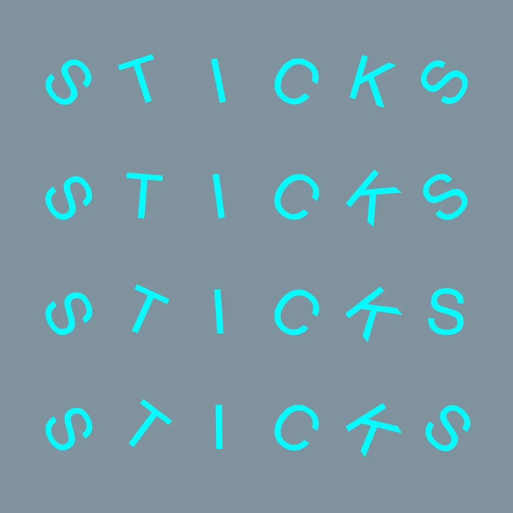

“ Fontastic ” is a generative design tool that uses typography as a visual instrument for dynamic animations. As the name suggests, it transforms type into something truly fantastic. By leveraging mathematical principles such as sine and tangent waves, “ Fontastic “ enables users to animate text through movement, distortion and rhythm.



The tool allows you to load and experiment with any font, turning static type into animated specimens. A key feature is its interactive interface, where users can fine-tune a wide range of parameters including colours, canvas and font size and wave behavior to shape the motion of the character input. The real-time manipulation offers a playful, explorative environment that bridges typography, motion design and code-based creativity.